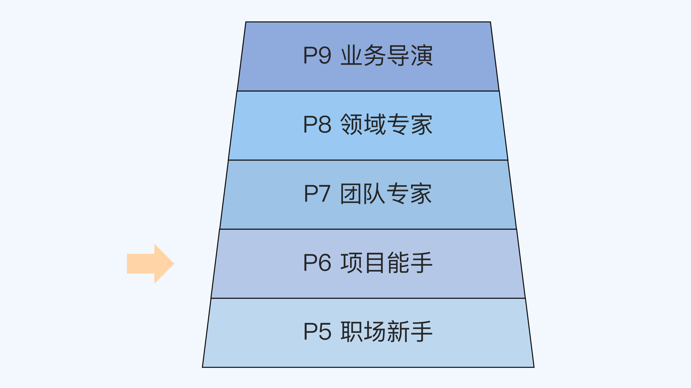
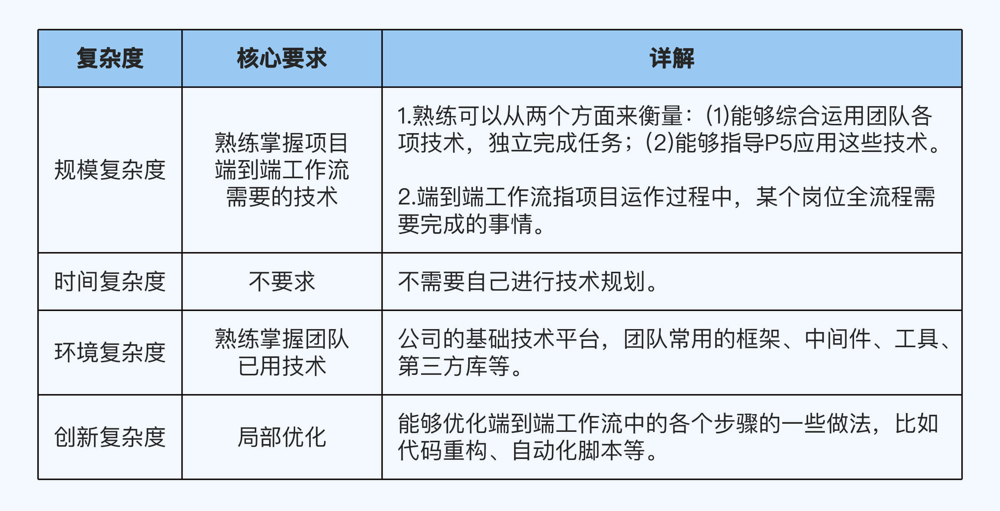
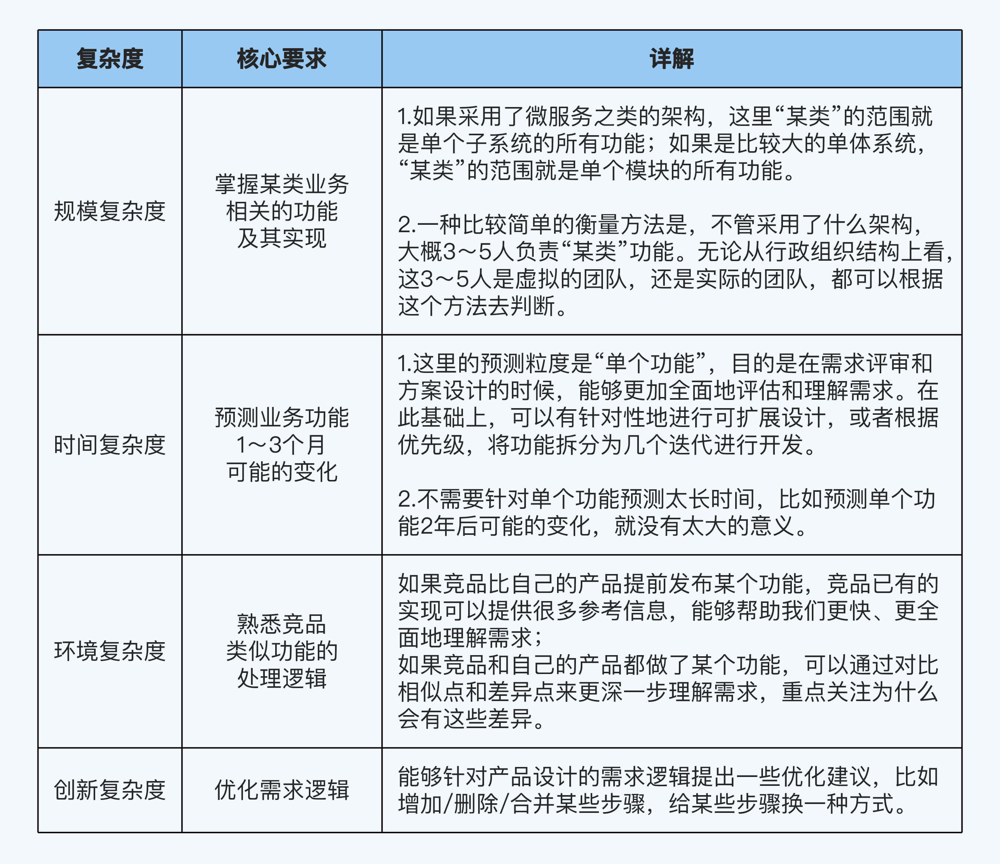
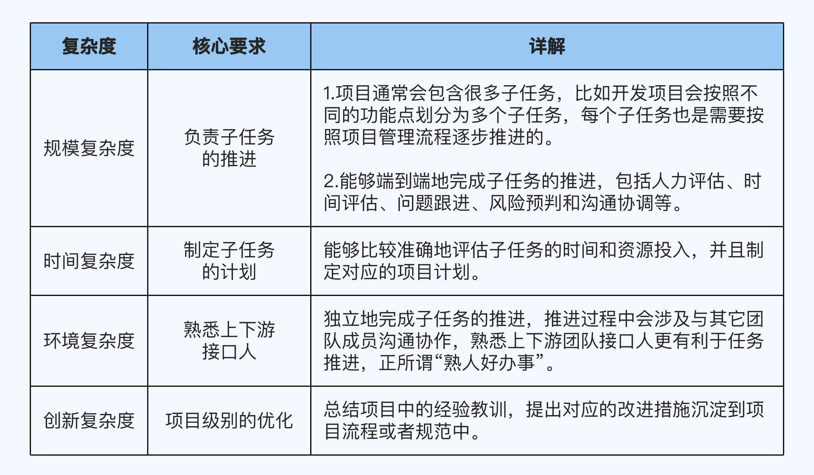
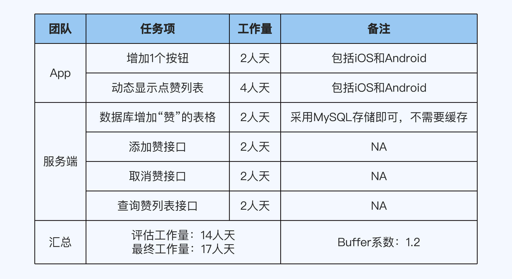
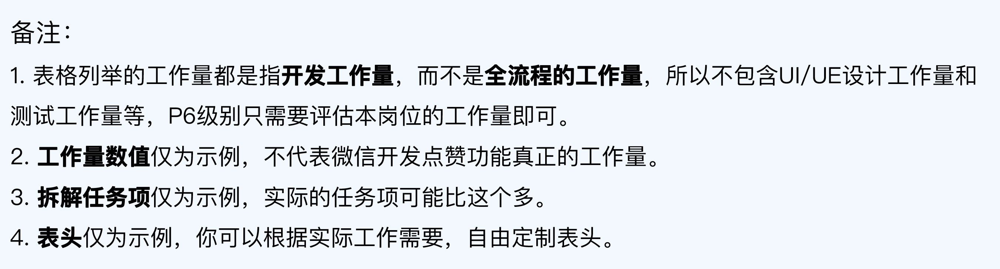
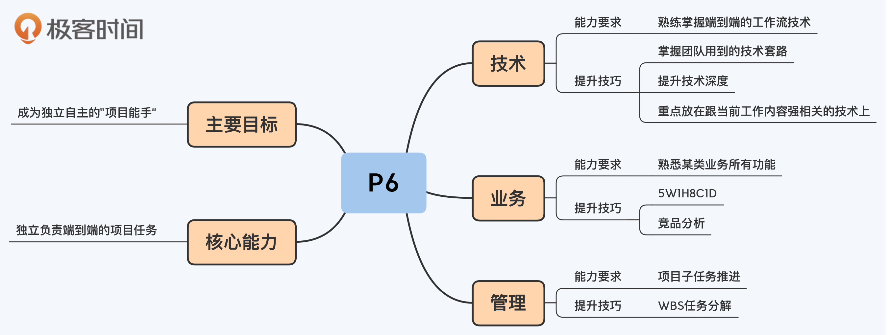

08 | P6提升攻略：怎么成为独立自主的“项目能手”？
你好，我是华仔。
上一讲我们学到了，P5的核心能力要求是在别人的指导下完成任务。如果能够从P5晋升到P6，就说明你已经完成了从学生到打工人的角色转变，成长为一名合格的员工了。这一讲我们就来了解一下P6的能力要求和提升建议。
P6对应的工作年限是2～5年，核心能力要求可以用一句话来概括，独立负责端到端的任务。这句话有两个关键词：
独立：P6做的事情跟P5差不多，但已经不需要别人带着做了。P5和P6的开发人员都会参加需求评审，只不过P5参加的时候只是在听，而P6可能就会针对需求直接提出意见。
端到端：负责项目中的某部分功能的全流程相关事项。开发的端到端事项包括需求评审、方案设计、编码、修改bug和上线等；测试的端到端事项包括需求评审、测试方案设计、执行测试和上线等；而产品的端到端事项则包括用户分析、需求写作、数据分析和竞品分析等。
P6和P7是业界主要的劳动力，这两个级别的人数加起来，估计能够占到团队总人数的60%～80%。P6级别的主要提升目标是成为独立自主的项目能手。接下来，我就从技术、业务和管理三个维度一一展开进行讲解。

技术：掌握团队用到的技术“套路”
P6在技术方面的核心要求是熟练掌握端到端的工作流技术，因为P6是项目主力劳动力，需要参与项目流程中的某些阶段，完成分配的任务。
P6级别的技术详细要求，我总结在了这张表格里：

在P6阶段，提升技术能力的关键就是掌握团队用到的各种技术的“套路”。以Android开发人员为例，套路包括设计模式、SOLID设计原则、Android的MVP架构和各类工具（比如Fiddler，Wireshark，tcpdump）等。不同岗位的“套路”不同，你可以自行整理，也可以求助团队中有经验的同事。
在P5阶段，你可能只要了解一些单个的技术点就能完成工作；但是到了P6，你就必须知道怎么整合这些技术套路，来完成端到端的项目开发任务。
以Java后端开发为例，P6需要知道如何将数据库、缓存、面向对象、设计模式、HTTP等技术点整合起来完成某个功能的开发。
提升技术深度
除了熟练使用套路，P6还需要深入理解套路背后的技术原理和细节，提升自己的技术深度。
以设计模式为例，P5可能只知道每个设计模式是什么意思，但是P6还要知道什么时候用设计模式，什么时候不用设计模式，具体应该用哪个设计模式。
这也是P6能够指导P5的原因：P5只知道what，P6还知道why。
P6阶段提升技术的时候，很容易掉到一个陷阱里，那就是贪多求全。你可能看了很多技术，其他人说起某个技术点的时候，你都有印象。但其实你只是蜻蜓点水，并没有深入学习。
正确的做法是什么呢？重点抓住跟当前工作内容强相关的技术点和技术套路，深入学习和研究，重点提升技术深度。如果有精力，你再去拓展学习一些暂时用不到、但以后很可能会用到的技术。
千万不要因为短时间内什么流行就去学什么，一会儿学这个一会学那个，结果什么都懂一点，什么都不精通。
业务：掌握所有功能并深度理解处理逻辑
在业务能力上，P6相比P5的提升主要体现在两方面。
一是P6对功能掌握得更全面。P5只掌握了其中一部分功能，而P6基本上要求掌握某类业务的所有功能。
二是P6对处理逻辑的理解更深刻。P5只需要知道具体的需求处理逻辑是什么，而P6要求理解需求的“上下文信息”，比如需求给用户/客户带来的价值是什么，解决了什么问题，为什么要设计5个步骤而不是3个步骤，为什么竞品的功能设计跟我们不一样。
P6级别的业务能力要求，我总结在了这张表格里：

P6级别提升业务能力的核心方法是我自创的“5W1H8C1D”分析法。传统的“5W1H”分析法只关注需求的功能属性，所以我在“5W1H”基础上，又增加了对需求的质量属性（8C）和上线后效果（1D）的考虑。
这个方法不是一两句话能够讲清楚的，我会在课程的专项提升部分专门用1讲的篇幅为你详细介绍。
除了这个方法之外，认真做好竞品分析也很重要。通过对比竞品和自己的产品类似功能的差异、优劣，你能够更好地理解业务。
管理：推进项目中的子任务
P6管理能力的要求主要是能够负责项目中的子任务推进。
具体的管理要求，我总结在了这张表格里：

工作量评估：WBS分解法
P6的管理职责包括任务的工作量评估、计划制定以及分配和跟踪等。其中工作量评估是P6的核心职责，而计划制定以及分配和跟踪，主要是配合项目经理来完成的。而且，工作量评估的准确性是第一步，会直接影响到后续工作的合理性。
所以，掌握工作量评估的有效方法，也是P6在管理方面的核心能力。
很多人在评估工作量的时候没有依据，所以心里比较虚，如果项目经理或者产品经理稍微挑战一下，就会很容易退让，导致工作量被压缩。到了实际项目执行的时候，他们发现工作量评估偏少了，为了赶上项目进度，就只能加班加点。
我在职业生涯中遇到过四种评估方法：
- 拍脑袋法：让团队有经验的人直接拍脑袋想一个工作量数字。
- 扑克牌法：找3～5个人员，每人给一张小纸条，每个人把工作量评估写在纸条上，最后取平均值。
- 对比法：参考曾经做过的类似的项目，看看之前的项目工作量是多少，然后以此为基础想一个数字。
- WBS分解法：把需求拆解为多项小任务，单独评估每个小任务的工作量，然后汇总；评估小任务的工作量的时候可能采取上面这3种方法。
从实践经验来看，WBS分解法的效果是最好的，评估的误差基本上不会超过20%。
WBS的全称是Work Breakdown Structure，中文翻译是“工作分解结构”。WBS分解法的原理是，通过把项目工作按阶段可交付成果分解成更小的、更易于管理的组成部分，来提升项目管理的效率。
我们以朋友圈点赞为例，开发人员采用WBS分解方法，可以得到下面这个任务分解表格：

对于分解出来的子任务项，我们就可以用“拍脑袋法”评估工作量了。这样做能够兼顾效率和效果，因为子任务项已经比较小，基本上你凭经验就能够得到比较合理的结果。就算单个任务项有偏差，也是有的偏多有的偏少，最终的偏差反而会互相抵消。
避免过于乐观：加Buffer
大部分人在评估工作量的时候都会比较乐观，而且在项目过程中可能有各种意外出现（比如某个开发或者测试人员生病）。在实践中，为了避免过于乐观的评估给后面的项目进度带来风险，我们往往会采取加Buffer（缓冲）的做法，也就是说，将评估的初步结果乘以一个大于1的系数来作为项目的工作量。
还是拿朋友圈点赞功能来说明，如果初步评估的工作量是14人天，Buffer系数取1.2，那么最终做项目计划时，参考工作量就是17人天（14*1.2 = 16.8 ≈ 17）。
这个Buffer系数可以在1.2～1.6之间浮动，一般根据项目的复杂度决定。全新的业务功能Buffer会高一些，在已有业务功能上修改时Buffer会低一些。
小结
这一讲我基于COMD能力模型，给你详细解读了P6级别的具体要求以及对应的提升技巧。现在，我们回顾一下这一讲的重点：
- P6的核心能力要求是独立负责端到端的项目任务，主要提升目标是成为独立自主的“项目能手”。
- 技术方面，P6需要掌握团队用到的各种技术的“套路”，重点提升技术深度，学习时要避免贪多求全的心态，优先深入学习跟工作内容强相关的技术。
- 业务方面，P6需要掌握某类业务相关的所有功能，并深度理解处理逻辑，主要的提升方法是“5W1H8C1D”分析法和竞品分析。
- 管理方面，P6需要负责项目子任务推进，包括工作量评估、计划制定和沟通协调等。评估工作量的时候，建议使用WBS分解法，先拆解成容易评估的小任务，然后独立评估每项任务，最后汇总。

思考题
这就是今天的全部内容，留一道课后思考题给你吧。P6的能力要求已经比较全面地覆盖了技术、业务和管理三个维度。假如你是晋升评委，你会怎么分配这三个维度在职级能力中的占比呢，理由是什么？
欢迎你把答案写到留言区，和我一起讨论。相信经过深度思考的回答，也会让你对知识的理解更加深刻。